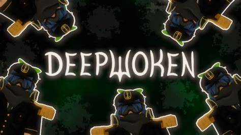
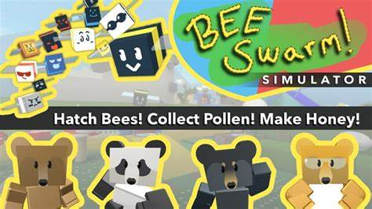
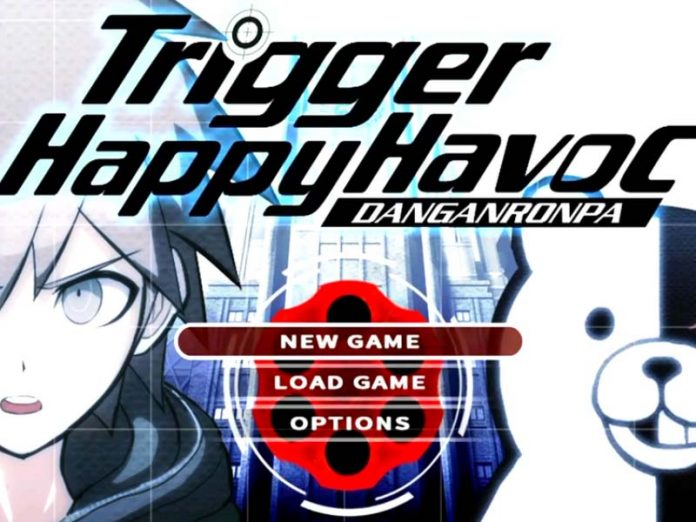

| HOME |
VideoJuegos Favoritos |
Deepwoken |
Deepwoken utiliza una narrativa lineal y un estilo de exploración de mundo abierto para permitir que cada jugador cree su propia historia. Los usuarios también pueden jugar a través de aspectos de Deepwoken más de una vez, por lo que no tienen que ser dos juegos iguales. |
 |
| 
| Bee swarm simulator es un videojuego de roblox el cual consiste en recolectar pollen, mejorar tus recolectores,
conseguir mejores abejas,mejorar tu equipamento y mejorar nivel de tus abejas con el fin o proposito de descubrir hasta el ultimo tesoro
escondido en el mapa. |
Bee swarm simulator |
Danganronpa |
Danganronpa es una novela visual que trata sobre un grupo de estudiantes talentosos que fueron encerrados
en una academia con el objetivo de proponerles un juego, el cual consiste en que si uno de los estudiantes logra completar un asesinato
sin que alguno de los demas pueda llegar a deducir que el fue, tendra la posibilidad de salir de la academia o si no ser ejecutado.
|
 |
Enlaces |